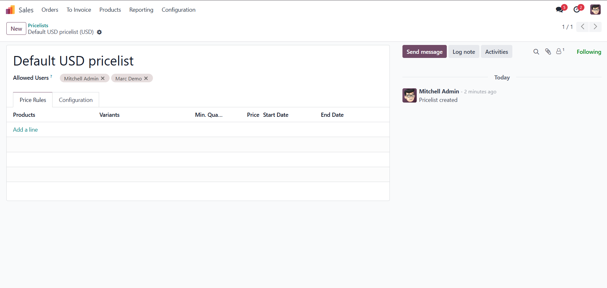
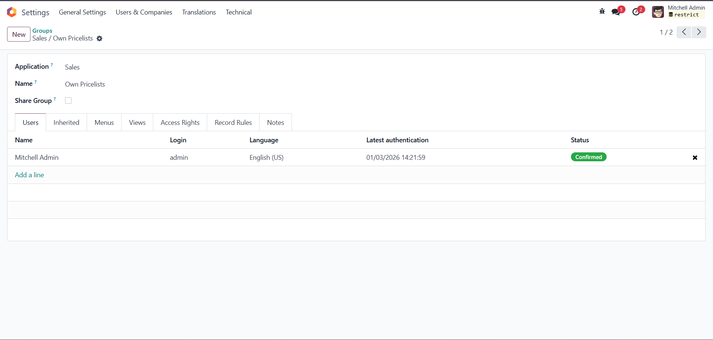

Restrict Pricelist Users – User-Based Pricelist Access Control
Restrict access to Product Pricelists by user in Odoo 16, 17 and 18.
Control which users can see specific pricelists using native Odoo security groups and record rules.
Overview
Restrict Pricelist Users allows you to control the visibility of Product Pricelists
based on the logged-in user. It is especially useful for companies using multiple pricelists
who want to avoid pricing confusion and unauthorized access.
Key Features
- User-based pricelist visibility
- Many2many Allowed Users field on pricelists
- Public or restricted pricelists
- Native Odoo record rules (no overrides)
- Works with Community & Enterprise
- Lightweight and easy to configure
How It Works
The module adds an Allowed Users field on each Product Pricelist.
- If the field is empty, the pricelist is visible to all restricted users
- If users are selected, only those users can see the pricelist
Security Groups
-
Own Pricelists
Users can only see:
- Pricelists where they are included in Allowed Users
- Pricelists where Allowed Users is empty
-
All Pricelists
Users can see all pricelists (unrestricted access)
Configuration
-
Assign user groups:
Settings → Users & Companies → Users
-
Configure pricelists:
Sales → Products → Pricelists → Allowed Users
Example
- User U1 sees PL1 and PL2
- User U2 sees only PL2
Compatibility
- Odoo 16.0
- Odoo 17.0
- Odoo 18.0
- Odoo 19.0
- Community & Enterprise
For support or customization requests, please contact the author.
1. Pricelist Form
Configure which users can access each pricelist using the Allowed Users field:

2. User Groups
Assign restricted or full access to users via security groups:
